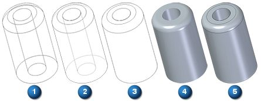
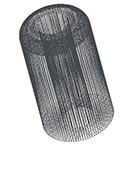
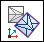

Reverse Engineering workflow
Use the tools and commands located on the Reverse Engineering tab to transform mesh bodies into Boolean (B-Rep) design bodies. The imported mesh data must be in the Stereo Lithographic (STL) file format, which is native to many different types of 3D modeling systems. The commands on the Reverse Engineering tab are enabled when there is at least one mesh body (solid or construction) in the active document.
Reverse Engineering supports mixed mesh bodies.
For more information about mesh bodies, see mesh modeling.
Refer to the sections below for more information.
Open or create a file
Open a part or sheet metal document that already contains a valid mesh model or create a new document from an existing STereo Lithographic (STL) file format. The .stl file can contain one or more mesh bodies.
To create a new document from an existing mesh file, choose the File tab→Open→Browse command and select the STL documents (*.stl) file type filter to identify a valid file type.
Before you open the STL documents (*.stl) file, select the Options... button to specify the import options in the STL Import Options dialog box.
You are prompted to choose one of the Standard Templates to use for the selected file.
The location of the imported mesh is based on the base coordinate system. The imported .stl file displays as a mesh.
Mesh viewing options
The mesh file can be viewed using any of the following options:

(1) Wire Frame(2) Visible and Hidden Edges, (3) Visible Edges, (4) Shaded, (5) Shaded with Visible Edges
To obtain the wireframe view of the mesh, select the View tab→Style group→View Overrides command to open the View Overrides dialog box. From the Render mode: list, select the Wireframe option.

Align mesh bodies to a coordinate system
Use the Reverse Engineering tab→Cleanup Mesh group→ Align command

to automatically align imported mesh bodies to a selected coordinate system.Alignment workflow
The steps for aligning mesh bodies are:
-
Select mesh body
-
Select the "To" coordinate system
Clean up the mesh
Use the Delete Mesh command to remove any portion of the mesh that is not required.
Use the Fill Holes command to fill holes and voids, so that you are able to identify regions successfully.
Use the Smooth Mesh command to smooth the mesh and boundary.
Use the Remesh command to remesh the mesh to a specific mesh size.
Identify geometric regions
Use the Automatic regions and Manual regions commands to identify geometric regions.
Each recognized geometric region is assigned a color:
|
Color |
Region geometry |
|
Planar |
|
|
Cylindrical |
|
|
Conical |
|
|
Spherical |
|
|
B spline/Freeform |
|
|
Non Extractable |
You can paint an area using the options on the Manual regions command bar, and later assign a region type using the Fit regions command.
Extract surfaces
Use the Extract surfaces command to extract the regions based on their color.
Use the Fit to assign surfaces to selected regions.
Trim and stitch construction surfaces to form construction bodies
Use Surfacing commands to locate the intersections of the surfaces, and trim the construction surfaces to size.
Trimmed surfaces are then stitched together to construct a model body (also using Surfacing tools).
When all the stitched construction bodies can be combined to form a fully enclosed Boolean body, the surfaces change from (construction) to (valid body) during Preview (an optional evaluation), before finishing the operation.
Convert the construction body to a model body using the Attach shortcut command. This is available when you right-click the Stitched feature in PathFinder. You can also change the construction body to a model body using the Toggle Design/Construction shortcut command on the Solid Body design body in PathFinder.
How do I
Create a sketch from a section curveLearn more
Reverse engineering exampleLook up more details
Delete Mesh commandFill Holes command
Smooth Mesh command
Align command
Align command bar
Remesh command
Remesh Options dialog box
Automatic regions command
Manual regions command
Extract surfaces command
Fit surfaces command
Deviation Analysis command
Deviation Analysis command bar
Deviation Analysis Settings dialog box
Section Sketches command
Section Sketches command bar
Section Sketches Options dialog box
Related Topics
Align a mesh body to a coordinate systemAnalyze the deviation between two objects